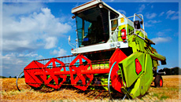

Le saviez-vous ?
L'agriculture contribue à la réduction de l'effet de serre : elle rejette moins de gaz à effet de serre que l'industrie ou les transports, mais elle absorbe aussi chaque année 300 millions de tonne de CO2.
La France compte 500 000 exploitations agricoles. L'agriculture française signe chaque année + d'1 million de contrats de travail. 70 000 emplois proposés dans les secteurs agricoles, agro-alimentaires et para-agricoles non pourvus.
L'agriculture est un secteur clé pour l'emploi et représente 2.6 millions d'emplois au total.